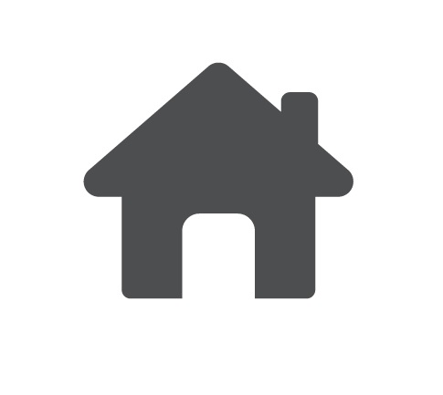
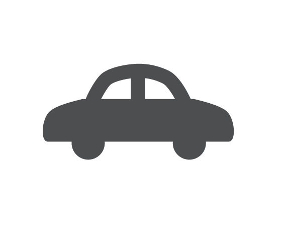
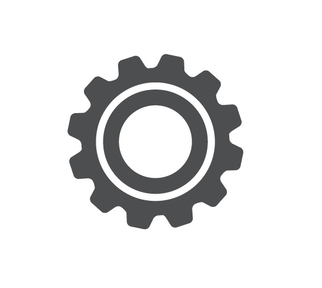
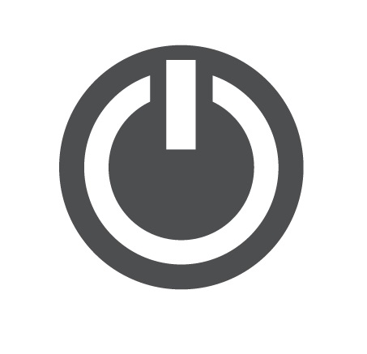

|
Teknik Sipil |
Teknik Elektronika Industri |
Teknik Otomotif |
Teknik Permesinan |
Teknik Instalasi Tenaga Listrik |
STM Negeri 2 sekarang SMK Negeri 5 Surakarta berdiri sejak tanggal 1 Agustus 1965 dengan nama STM Negeri di Purwonegaran Surakarta. Berdasarkan surat keputusan Menteri P dan K Republik Indonesia no 99/ Sek. Dit. Pt/ 71/ 1967 tanggal 1/8/1987. STM Purwonegaran Surakarta diganti menjadi STM Begeri II Surakarta. Berdasarkan Surat Keputusan Menteri Pendidikan dan Kebudayaan Republik Indonesia N0. 036/01/1997. Tanggal 7 Maret 1887 tentang Perubahan Nomenklatur SMKTA menjadi SMK. Maka STM Negeri II Surakarta menjadi SMKN 5 Surakarta Ditetapkan tanggal 7 Februari 1997.
SMKN 5 Surakarta sejak tanggal 13 Juni 2006 menerapkan sistim manajemen mutu. SMM ISO : 9001:2000 sejak tanggal 14 Mei 2009.